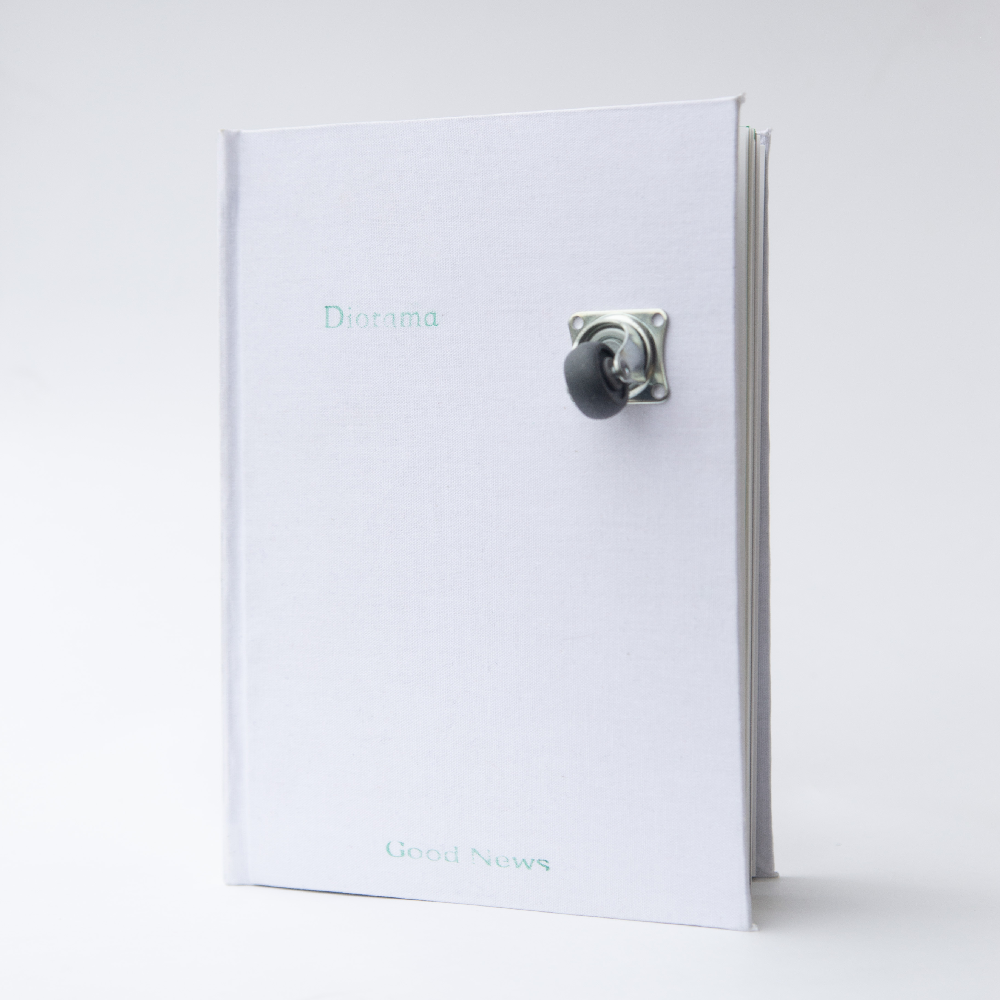
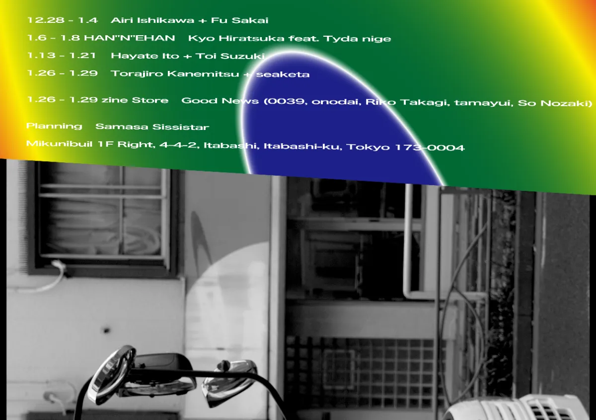

GoodNews Vol.2
Diorama

GoodNews Vol.2 は2024年1月26日から1月29日の3日間に渡り開催されました。参加したアーティストは0039、小野台、片岡玉結、髙木理子、野崎想の5名。
東京都板橋区のcopycentergalleryにて新作ZINEの販売を行いました。
同フロアでは髙木理子氏と急遽参加した堀内蓮氏によるプロジェクトの展示「Crossing Letter」が開催されこのプロジェクトは現在も続いている。
